Recursive Estimation and Data Segmentation Techniques in System Identification Toolbox™
This demo describes the group of recursive ("online") algorithms in the System Identification Toolbox™. The data segmentation scheme SEGMENT is an alternative to recursive or adaptive estimation schemes for capturing time varying behavior. This utility is useful for capturing abrupt changes in the system because of a failure or change of operating conditions.
Contents
Introduction
The recursive estimation functions include RPEM, RPLR, RARMAX, RARX, ROE, and RBJ. These algorithms implement all the recursive algorithms described in Chapter 11 of Ljung(1987).
RPEM is the general Recursive Prediction Error algorithm for arbitrary multiple-input-single-output models (the same models as PEM works for).
PRLR is the general Recursive PseudoLinear Regression method for the same family of models.
RARX is a more efficient version of RPEM (and RPLR) for the ARX-case.
ROE, RARMAX and RBJ are more efficient versions of RPEM for the OE, ARMAX, and BJ cases (compare these functions to the off-line methods).
Adaptation Schemes
Each one of the algorithms implement the four most common adaptation principles:
KALMAN FILTER approach: The true parameters are supposed to vary like a random walk with incremental covariance matrix R1.
FORGETTING FACTOR approach: Old measurements are discounted exponentially. The base of the decay is the forgetting factor lambda.
GRADIENT method: The update step is taken as a gradient step of length gamma (th_new = th_old + gamma*psi*epsilon).
NORMALIZED GRADIENT method: As above, but gamma is replaced by gamma/(psi'*psi). The Gradient methods are also known as LMS (least mean squares) for the ARX case.
Analysis Data
In order to illustrate some of these schemes, let us pick a model and generate some input-output data:
u = sign(randn(50,1)); % input e = 0.2*randn(50,1); % noise th0 = idpoly([1 -1.5 0.7],[0 1 0.5],[1 -1 0.2]); % a low order idpoly model y = sim(th0,[u e]); z = iddata(y,u); plot(z) % analysis data object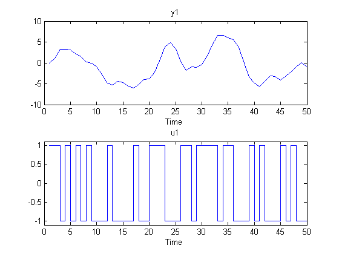
Output Error Model Estimation Using ROE
First we build an Output-Error model of the data we just plotted. Use a second order model with one delay, and apply the forgetting factor algorithm with lambda = 0.98:
thm1 = roe(z,[2 2 1],'ff',0.98); % It may take a while to compute....
The four parameters can now be plotted as functions of time.
plot(thm1), title('Estimated parameters') legend('par1','par2','par3','par4','location','southwest')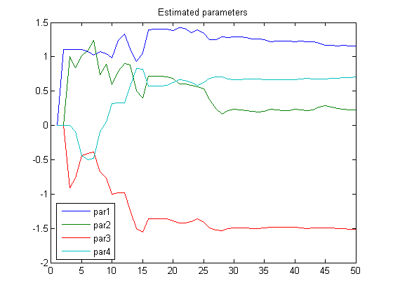
The true values are as follows:
hold on, plot(ones(50,1)*[1 0.5 -1.5 0.7],'--','linewidth',2), title('Estimated parameters (solid) and true values (dashed)') hold off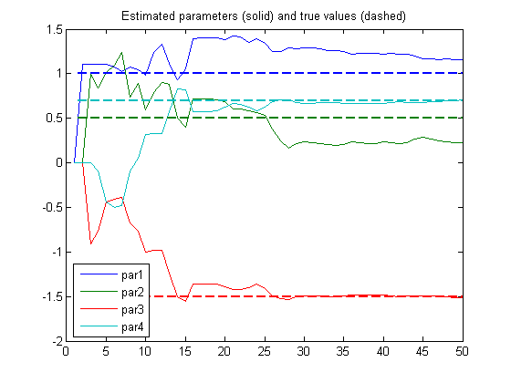
ARMAX Model Estimation USING RPLR
Now let us try a second order ARMAX model, using the RPLR approach (i.e. ELS) with Kalman filter adaptation, assuming a parameter variance of 0.001:
thm2 = rplr(z,[2 2 2 0 0 1],'kf',0.001*eye(6)); plot(thm2), title('Estimated parameters') legend('par1','par2','par3','par4','par5','par6','location','bestoutside') axis([0 50 -2 2])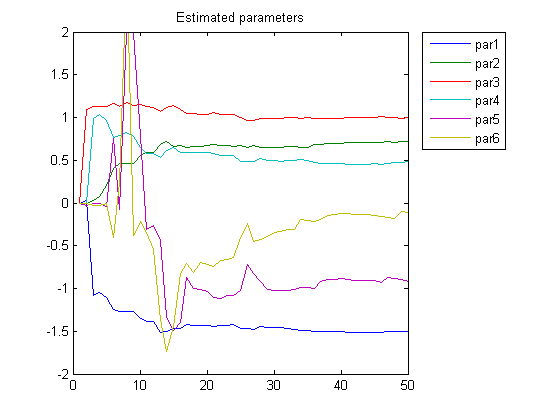
The true values are as follows:
hold on, plot(ones(50,1)*[-1.5 0.7 1 0.5 -1 0.2],'--','linewidth',2) title('Estimated parameters and true values') title('Estimated parameters (solid) and true values (dashed)') hold off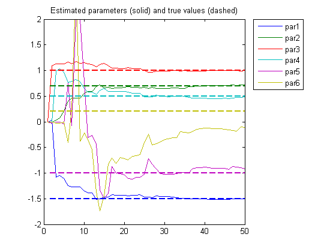
So far we have assumed that all data are available at once. We are thus studying the variability of the system rather than doing real on-line calculations. The algorithms are also prepared for such applications, but they must then store more update information. The conceptual update then becomes:
1. Wait for measurements y and u. 2. Update: [th,yh,p,phi] = rarx([y u],[na nb nk],'ff',0.98,th',p,phi); 3. Use th for whatever on-line application required. 4. Go to 1.
Thus the previous estimate th is fed back into the algorithm along with the previous value of the "P-matrix" and the data vector phi.
We now do an example of this where we plot just the current value of th.
[th,yh,p,phi] = rarx(z(1,:),[2 2 1],'ff',0.98); plot(1,th(1),'*',1,th(2),'+',1,th(3),'o',1,th(4),'*'), axis([1 50 -2 2]),title('Estimated Parameters'),drawnow hold on; for kkk = 2:50 [th,yh,p,phi] = rarx(z(kkk,:),[2 2 1],'ff',0.98,th',p,phi); plot(kkk,th(1),'*',kkk,th(2),'+',kkk,th(3),'o',kkk,th(4),'*') end hold off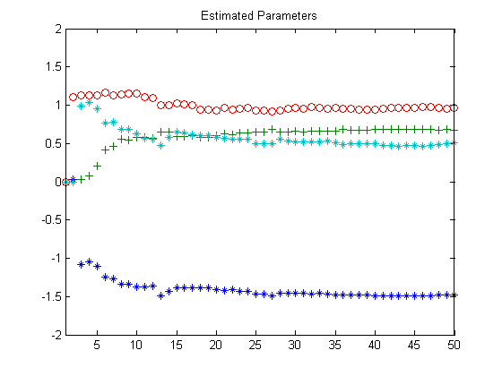
Data Segmentation as an Alternative To Recursive Estimation Schemes
The command SEGMENT segments data that are generated from systems that may undergo abrupt changes. Typical applications for data segmentation are segmentation of speech signals (each segment corresponds to a phonem), failure detection (the segments correspond to operation with and without failures) and estimating different working modes of a system. We shall study a system whose time delay changes from two to one.
load iddemo6m.mat
z = iddata(z(:,1),z(:,2));
First, take a look at the data:
idplot(z)

The change takes place at sample number 20, but this is not so easy to see. We would like to estimate the system as an ARX-structure model with one a-parameter, two b-parameters and one delay:
y(t) + a*y(t-1) = b1*u(t-1) + b2*u(t-2)
The three pieces of information to be given are: the data, the model orders, and a guess of the variance (r2) of the noise that affects the system. If the variance is entirely unknown, it can be estimated automatically. Here we set it to 0.1:
nn = [1 2 1]; [seg,v,tvmod] = segment(z,nn,0.1);
Let's take a look at the segmented model. On light-colored axes, the lines for the parameters a, b1 and b2 appear in blue, green, and red colors, respectively. On dark colored axes, these lines appear in yellow, magenta, and cyan colors, respectively.
plot(seg)
hold on
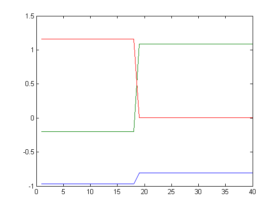 We see clearly the jump around sample number 19. b1 goes from 0 to 1 and b2 vice versa, which shows the change of the delay. The true values can also be shown:
plot(pars)
hold off
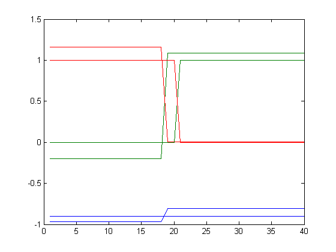 The method for segmentation is based on AFMM (adaptive forgetting through multiple models), Andersson, Int. J. Control Nov 1985. A multi-model approach is used in a first step to track the time varying system. The resulting tracking model could be of interest in its own right, and are given by the third output argument of SEGMENT (tvmod in our case). They look as follows:
plot(tvmod)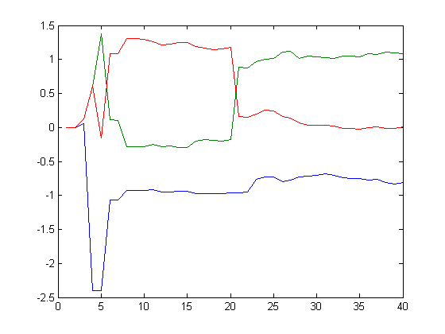
The SEGMENT alternative is thus an alternative to the recursive algorithms RPEM, RARX etc for tracking time varying systems. It is particularly suited for systems that may change rapidly.
From the tracking model, SEGMENT estimates the time points when jumps have occurred, and constructs the segmented model by a smoothing procedure over the tracking model.
The two most important "knobs" for the algorithm are r2, as mentioned before, and the guessed probability of jumps, q, the fourth input argument to SEGMENT. The smaller r2 and the larger q, the more willing SEGMENT will be to indicate segmentation points. In an off line situation, the user will have to try a couple of choices (r2 is usually more sensitive than q). The second output argument to SEGMENT, v, is the loss function for the segmented model (i.e. the estimated prediction error variance for the segmented model). A goal will be to minimize this value.
Application of SEGMENT: Object Detection in Laser Range Data
The reflected signal from a laser (or radar) beam contains information about the distance to the reflecting object. The signals can be quite noisy. The presence of objects affects both the distance information and the correlation between neighboring points. (A smooth object increases the correlation between nearby points.)
In the following we study some quite noisy laser range data. They are obtained by one horizontal sweep, like one line on a TV-screen. The value is the distance to the reflecting object. We happen to know that an object of interest hides between sample numbers 17 and 48.
plot(hline)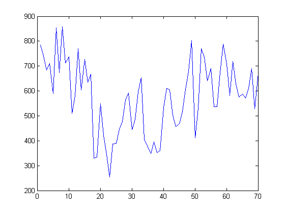
The eye is not good at detecting the object. We shall use "segment". First we detrend and normalize the data to a variance about one. (This is not necessary, but it means that the default choices in the algorithm are better tuned).
hline = detrend(hline)/200;
We shall now build a model of the kind:
y(t) + a y(t-1) = b
The coefficient 'a' will pick up correlation information. The value 'b' takes up the possible changes in level. We thus introduce a fake input of all ones:
[m,n] = size(hline); zline = [hline ones(m,n)]; s = segment(zline,[1 1 1],0.2); subplot(211), plot(hline),title('LASER RANGE DATA') subplot(212), plot(s) title('SEGMENTED MODELS, blue: correlation, green: distance')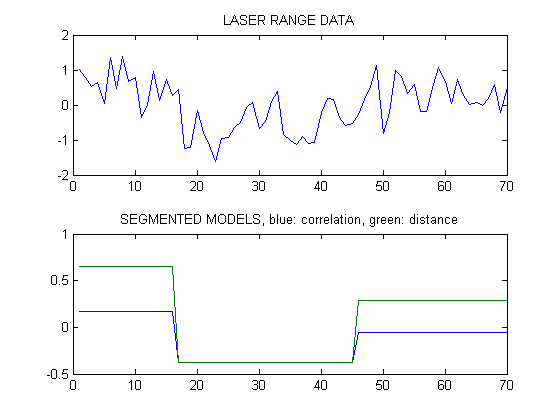
The segmentation has thus been quite successful. SEGMENT is capable of handling multi-input systems, and of using ARMAX models for the added noise. We can try this on the test data iddata1.mat (which contains no jumps):
load iddata1.mat s = segment(z1(1:100),[2 2 2 1],1); clf plot(s),hold on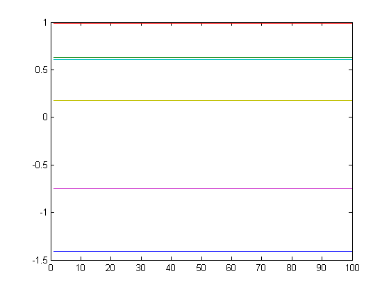
Compare this with the true values:
plot([ones(100,1)*[-1.5 0.7],ones(100,1)*[1 0.5],ones(100,1)*[-1 0.2]],'--','linewidth',2) axis([0 100 -1.6 1.1]) title('Estimated (solid) and true (dashed) parameters') hold off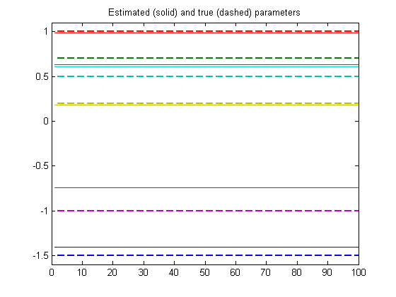
SEGMENT thus correctly finds that no jumps have occurred, and also gives good estimates of the parameters.
Additional Information
For more information on identification of dynamic systems with System Identification Toolbox visit the System Identification Toolbox product information page.